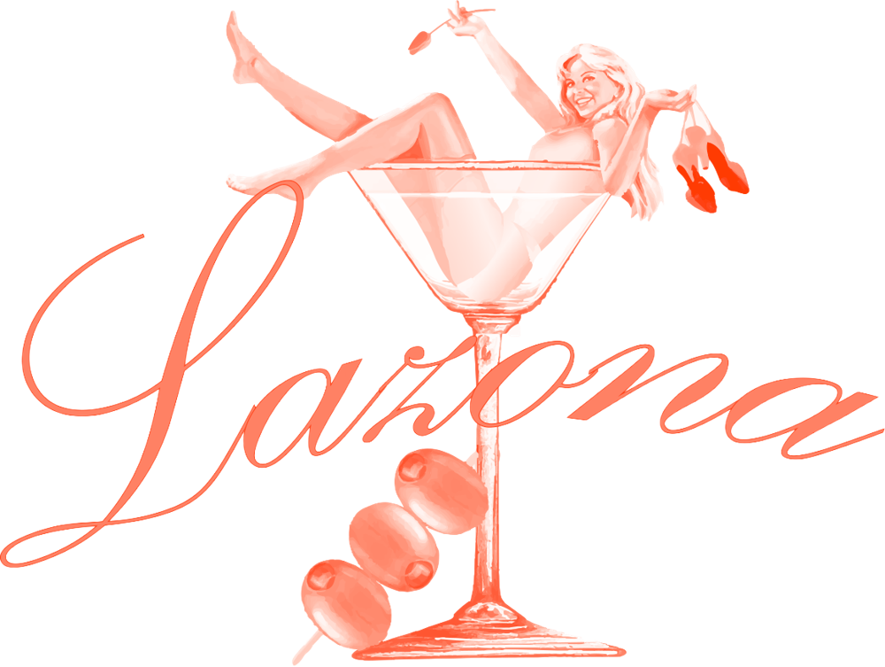
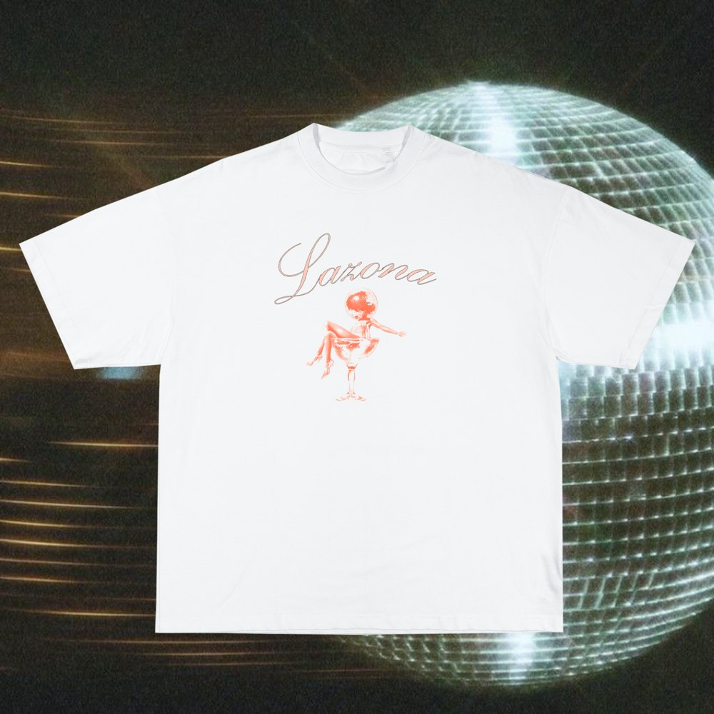
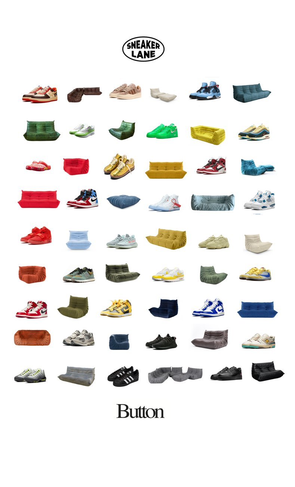
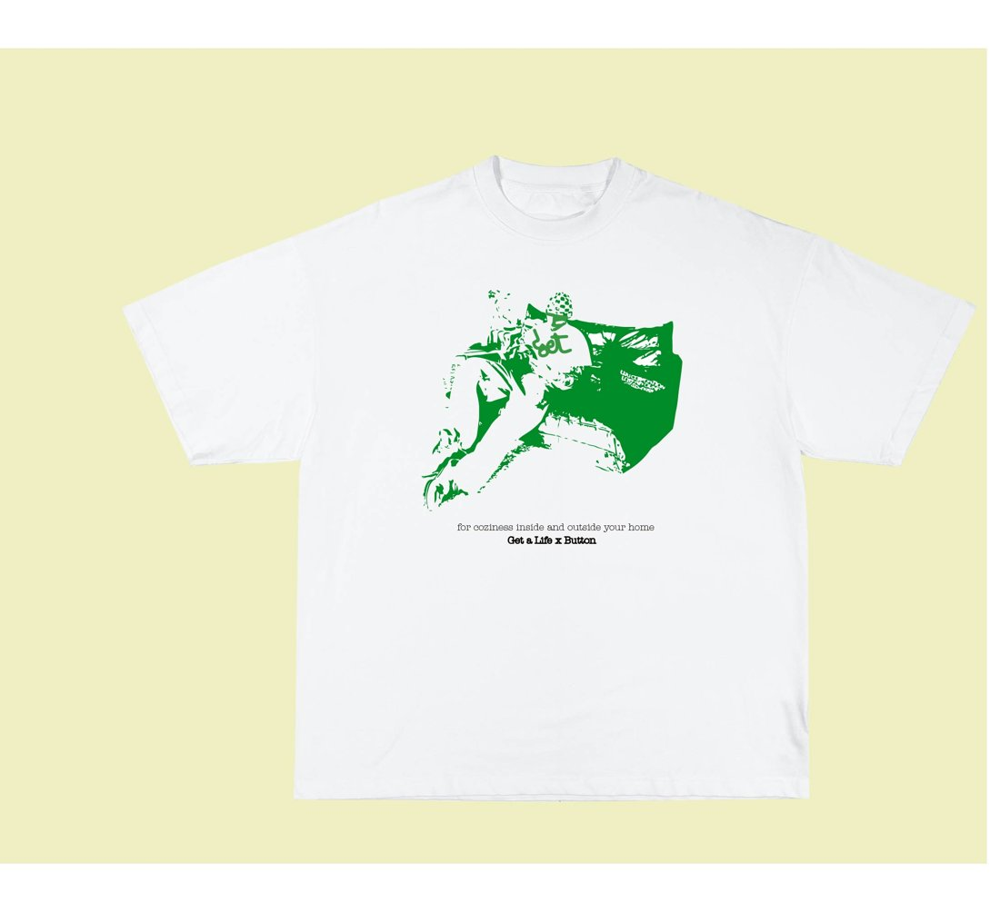
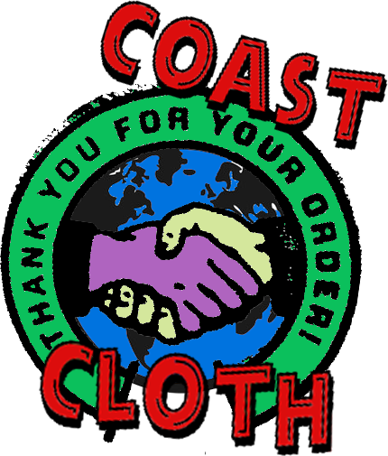
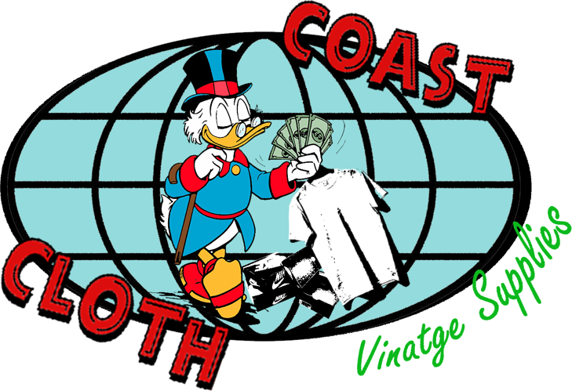
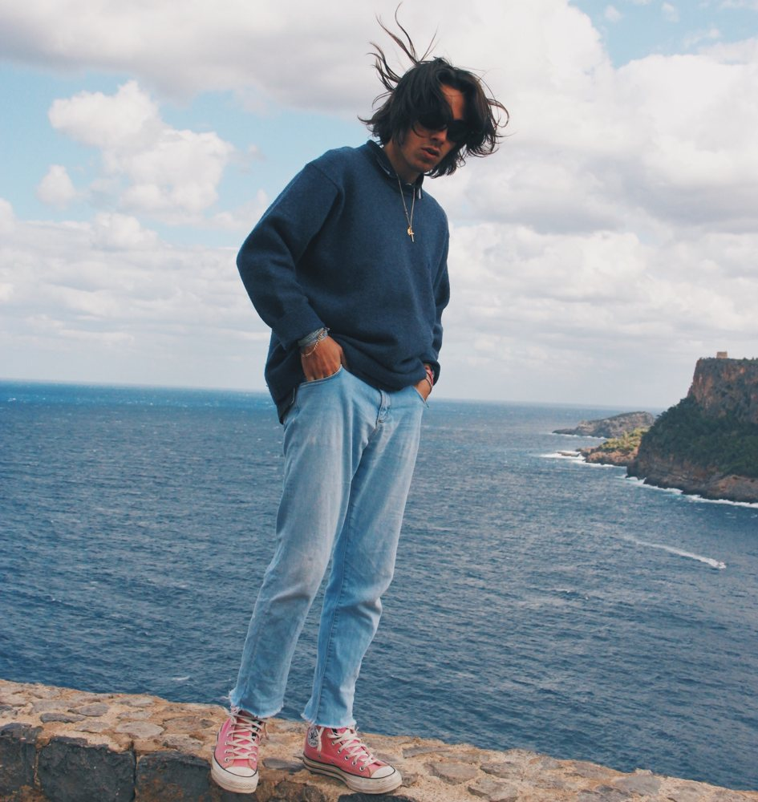

Graduado en ADE + Marketing. Diseño mi propia marca de ropa, GET A LIFE: logos, gráficos, mockups y 3D. También hago fotos en cada viaje y construyo herramientas con IA.
un diseño ↓
ARCHIVO
3D
CLIENTES


Pasa el ratónLA ZONA


Pasa el ratónBUTTON


Pasa el ratónCOAST CLOTH
LAB
Supvisions
Visualizador para raves en un solo archivo HTML. Escucha la música, detecta el tempo, el bombo y los drops, y genera visuales en directo. Pruébalo en directo
Canal automático
Un canal de YouTube de filosofía en castellano que publica un vídeo de más de 40 minutos al día. Investiga, escribe el guion, lo narra con voz sintética y monta el vídeo solo.
Trading terminal
Seis bots de inversión con dinero ficticio y una cuenta que vota por mayoría. Mezclan reglas cuantitativas con un modelo de IA local y las estrategias están probadas con 4 años de datos.
JobBot
Mi buscador de empleo: lee ofertas de decenas de portales, las puntúa con mi CV, prepara las cartas y me deja aprobar cada envío. Tiene una interfaz al estilo macOS.
SOBRE MÍ

Soy Gonzalo. Me muevo entre el marketing, el diseño y la tecnología: hago la marca, la foto y la herramienta.
Experiencia
- Técnico en Gestión Comercial y Ventas · Moll MotorOct 2025 – hoy · 180 vehículos/mes de 14 marcas
- Prácticas de agente comercial · LocatecJul – Sep 2023
- Logística y almacén · TecatelVeranos 2020 y 2022
Formación y logros
- ADE + Marketing · CEU Cardenal Herrera2019 – 2024
- 2.º puesto, European MarkstratSimulación de estrategia de marketing · Bucarest · 2024
- BrandY (Erasmus+)Creación de una marca de moda con un equipo internacional · Brujas · 2023
- Bachillerato en EE. UU. · Spring Lake High School2017 – 2018
Herramientas
Idiomas
- Castellano y valencianoNativo
- InglésC1 (TOEFL)
CONTACTO
Si tienes una marca, un producto o una idea que necesita verse bien, escríbeme.
GET A LIFE
GET A LIFE es mi marca de ropa. La creé en 2020 y la diseño de principio a fin: logos, gráficos, mockups, colecciones y piezas en 3D.